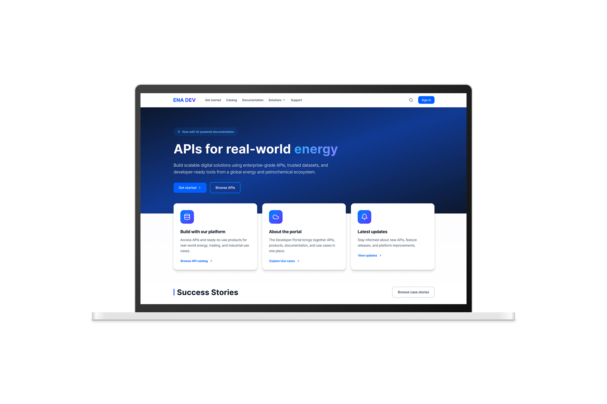
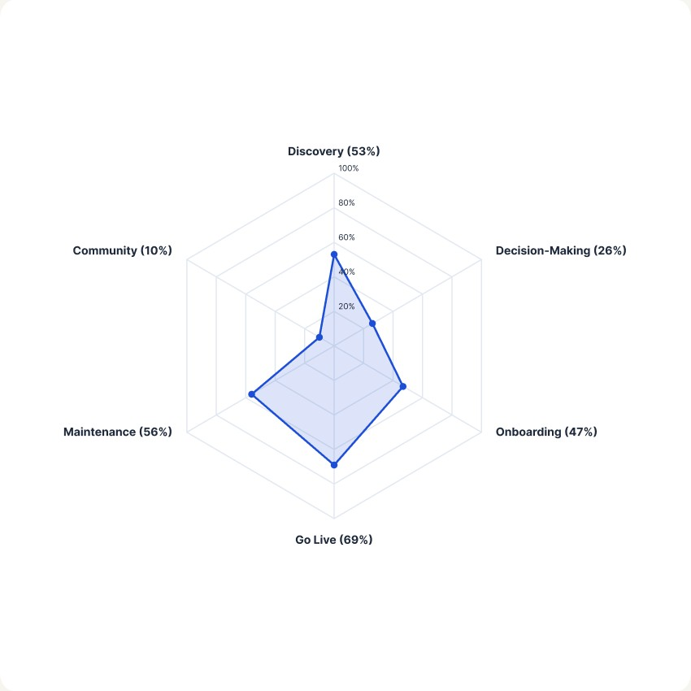
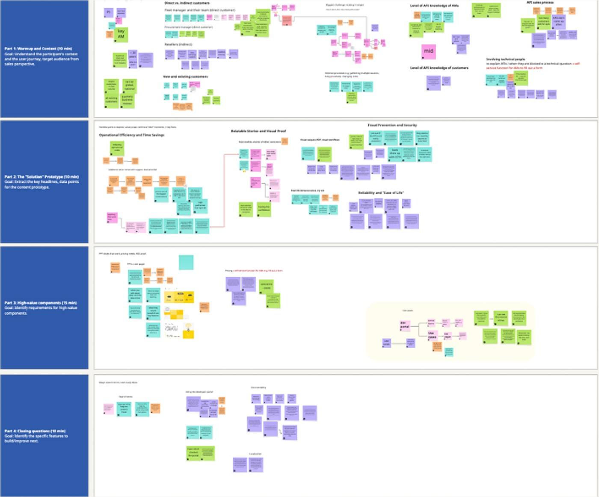
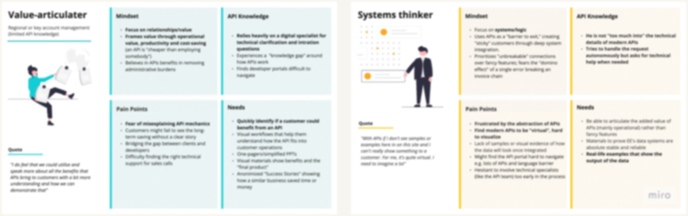
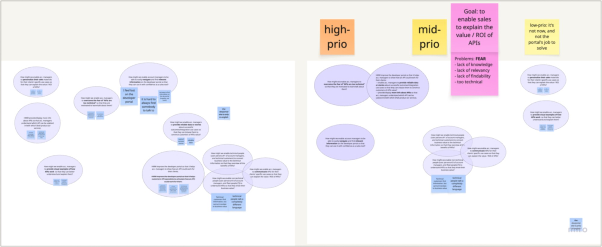
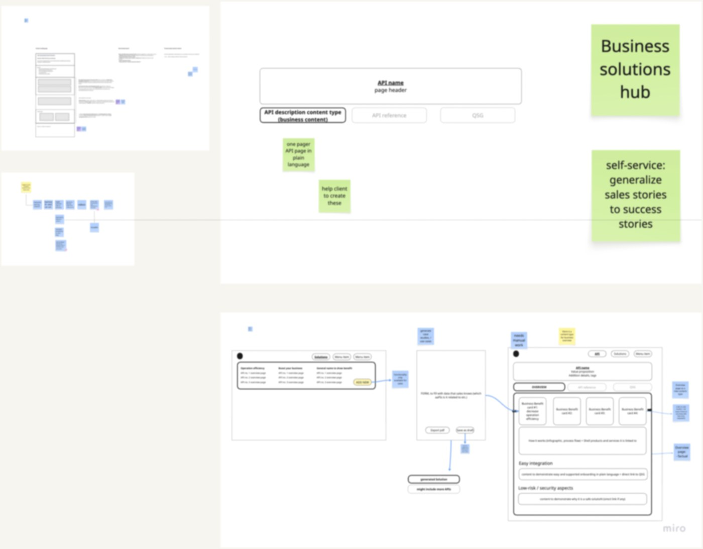
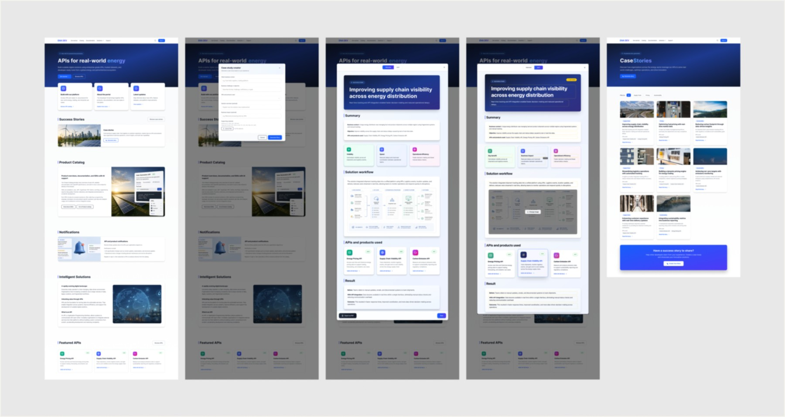
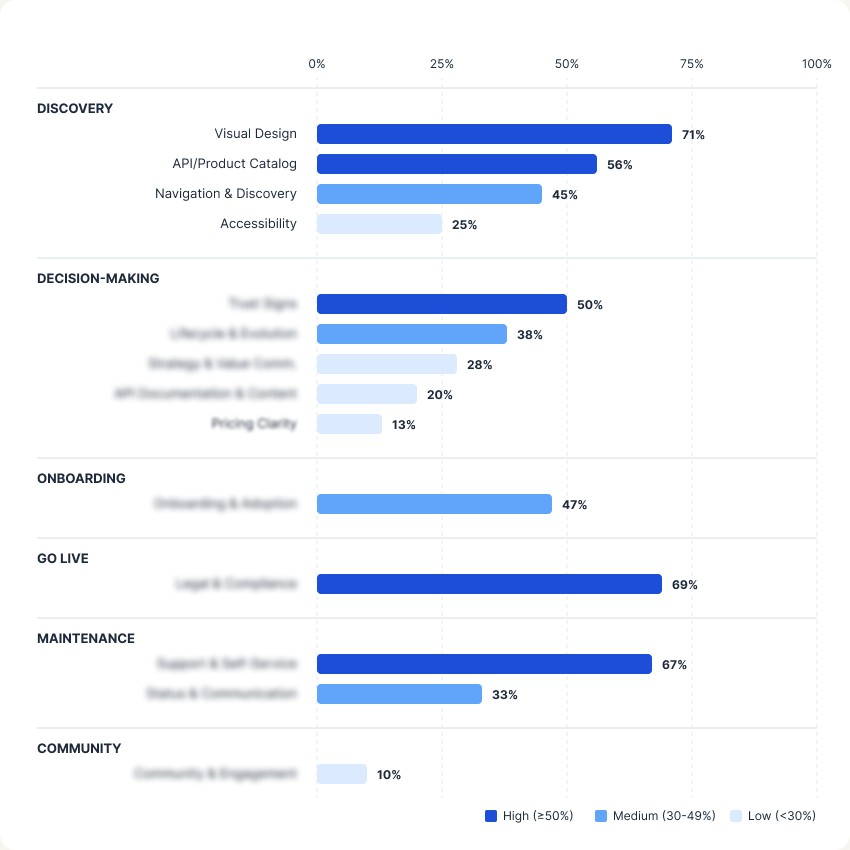

Hi! I'm Mónika
Over the past 3.5 years, I've worked with cross-functional teams on complex B2B problems, uncovering the insights that help them move beyond assumptions. My research connects user needs, business goals, and technical constraints to support confident design decisions.
Explore my workCase Studies

Sales Enablement
Enterprise UX Research

Developer Experience Strategy
Maturity Framework & Benchmarking
What collaborators say
"Móni has a remarkable ability to challenge assumptions constructively and bring new perspective to any product discussions and dilemmas to help decision making."
Pronovix Team
"Last week I started watching the interview recordings. They are super interesting!"
Energy Enterprise Client
"I think it's good that we are engaging. I appreciate the effort to bring all this information together into one place."
Energy Enterprise Client
"What sets Mónika apart is her thoughtful approach to research. She asks the right questions, design rigorous studies, and communicate findings in a way that is clear, compelling, and accessible to both technical and non-technical stakeholders."
Pronovix Team
Making API products easier to explain
Account managers already understood their clients. What they lacked was the confidence and language to connect technical capabilities to business value. A one-week discovery sprint uncovered what was really getting in the way.
My role
- Defined the research approach Designed a mixed-methods research plan that balanced speed with depth, enabling the team to make confident decisions within five days.
- Built research capability across the team Enabled designers to conduct interviews alongside me, increasing research capacity while ensuring the team heard customer perspectives firsthand.
- Coached others Mentored a designer through interview planning and facilitation, helping strengthen research skills within the team.
Helping account managers talk about APIs
The company had invested heavily in its API ecosystem, but these products rarely surfaced in customer conversations. While account managers excelled at understanding client needs, they often lacked the confidence and language to introduce technical solutions. API discussions typically happened only after customers asked for them, creating an ongoing dependence on a small group of technical specialists.
The challenge wasn't explaining APIs—it was helping account managers confidently connect technical capabilities to business outcomes.
Turning research into a validated concept
This wasn't a polished 12-week research project. We had five days to understand the problem, shape a concept, and validate it with users. There was no time for formal reports—our research lived in a shared Miro board, evolving alongside design decisions. Here's how evidence became a validated prototype.

Capture
Organised emerging findings while research was still in progress.
Rather than waiting for transcripts, I clustered observations as interviews happened. Working directly from notes kept the team aligned around emerging themes and allowed design discussions to begin immediately.
Synthesize
Identified two distinct user mindsets.
Interviews revealed two fundamentally different mental models. Relationship-focused account managers framed conversations around business outcomes, while systems-focused specialists thought in terms of technical integration. Designing for both required different language, content, and entry points.

Frame
Turned research into design opportunities.
The next morning, we translated our findings into "How Might We" questions. Prioritising these together helped the team move from observations to concrete design opportunities instead of jumping straight to solutions.

Validate
Tested the concept before the sprint ended.
Everyone sketched concepts based on the research, creating a shared understanding of the problem before converging on a direction. Product and UX designers refined the strongest ideas while developers reviewed feasibility early to surface technical constraints.

I then presented the research narrative to the client—connecting user evidence directly to the proposed solution and explaining the reasoning behind key design decisions. Once aligned, we mapped user flows and finished the week by validating the prototype with the same participants through five usability sessions.
Designing an AI-assisted content workflow
Research informed both the content strategy and the AI workflow. Instead of writing case studies from scratch, account managers described the customer challenge and selected the APIs used. AI then generated a draft focused on business outcomes, which users refined before publishing.
The workflow reduced the effort of documenting success stories while keeping the language aligned with how customers understood value.

Research impact
We reframed the problem
The research showed the real barrier wasn't technical knowledge—it was confidence. Instead of creating more training materials, we shifted towards giving account managers reviewed, customer-ready content they could confidently use in conversations.
The research shaped the solution
The findings directly informed:
- the AI-assisted sales enablement workflow
- the structure of solution-oriented case studies
- the content creation process
Together, these created a repeatable way to translate technical capabilities into business language. The content strategy and AI workflow were validated with users before development began.
Key takeaway
We started by assuming the barrier was knowledge. Research showed it was confidence.
Confidence didn't come from understanding every technical detail—it came from having visibility into the content, the ability to review it, and trust that what reached customers was accurate and relevant.
What people said
"Last week I started watching the interview recordings. They are super interesting!"
Global Energy Enterprise
"I think it's good that we are engaging. I appreciate the effort to bring all this information together into one place."
Global Energy Enterprise
"A highlight of our time together was collaborating on a fast-paced design sprint — Móni kept the entire team grounded and focused. She is empathetic, highly collaborative, and her versatile personality and precision is a valuable asset to any team."
Pronovix (team)
Explore other case studies
Let's talk!
Making portal maturity measurable
Enterprise clients had invested heavily in developer portals but had no way to know if it was working — or what to build next.
When "good enough" wasn't measurable
Enterprise clients invested heavily in developer portals but had no way to know if it was working and what to build next. Existing evaluations looked at interface design or individual features—nothing that explained what to improve next or how they stacked up against similar companies.
Internally, we faced the same challenge. Without a structured evaluation framework, every assessment was manual, inconsistent, and difficult to scale. Sales teams needed evidence to support conversations with clients, while product and technical teams needed actionable recommendations.
The challenge wasn't reviewing a UI—it was creating a shared understanding of portal maturity across technical, business, and organisational perspectives.
Understanding developer portals in context
Before I could define what made a good portal, I needed to understand what developers actually used them for. I looked at existing maturity models and interviewed developers using enterprise portals. The key shift: treating portals as ecosystems, not websites. Documentation, APIs, governance, onboarding, business goals—they all connect.
One insight became particularly important:
A portal's maturity depends on its purpose.
I designed the framework to account for different organizational goals, ensuring assessments were fair and actionable.
Building an adaptable evaluation framework
-
Research
Reviewed existing maturity models, interviewed developers, and synthesized patterns through card sorting.
-
Framework design
Built an evaluation framework informed by research and real-world portal use.
-
Validation
Tested the framework against existing customer portals while manually verifying automated results.
-
Communication
Created executive-ready data visualization alongside detailed engineering views to support different stakeholder needs.
-
Automation
Designed an AI-assisted workflow using NotebookLM and Gemini that reduced evaluation time by 80% without compromising consistency.
Executive level view
Different stakeholder needs influenced how results were presented.
Engineering level breakdown

Created assessment outputs tailored to product management and engineering to show a more granular view to results.
AI-assisted assessment
Instead of producing static UX audits, we generated contextual recommendations tailored to each organisation's goals.
I created an automated process (analysis, scoring, reporting) by using NotebookLM and Gemini, while manual validation ensured results remained trustworthy.
The outcome wasn't just faster assessments—it was a scalable way to benchmark developer portals across industries.
From manual reviews to scalable insights
For clients
- Clear understanding of current maturity
- Context-aware recommendations
- Better prioritization of future investments
- Executive-ready reports supporting stakeholder conversations
For the business
- Reduced evaluation time from by 80%
- Enabled benchmarking across enterprise clients
- Supported sales conversations with evidence rather than assumptions
- Generated market insights
Frameworks aren't valuable because they're comprehensive—they're valuable because they're contextual.
This project reinforced that evaluating complex services requires understanding why organisations make certain decisions before measuring how well they perform. A long and comprehensive assessment easily becomes a cognitive load which needs to be optimized.
Automation also introduced an important lesson: speed only creates value when people trust the results. Manual validation remained a part of the workflow, ensuring credibility.
Let's talk!